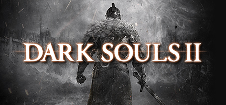

A Dark Souls challenge run.
You start with a randomly determined character, every time you level up, you will have to assign your stats according to a dice roll.
Before every fog gate leading to a boss, you will have to roll again for a challenge wildcard. This wildcard will impose additional challenges onto the boss fight. For example, only use your shield to fight, or only fight naked.
Added support for Dark Souls 2. Scholar of the First Sin not officially implemented, but should stay the same
The support is a bit basic at the moment, missing the appearance options because they have no explicit names, but it should be good for now